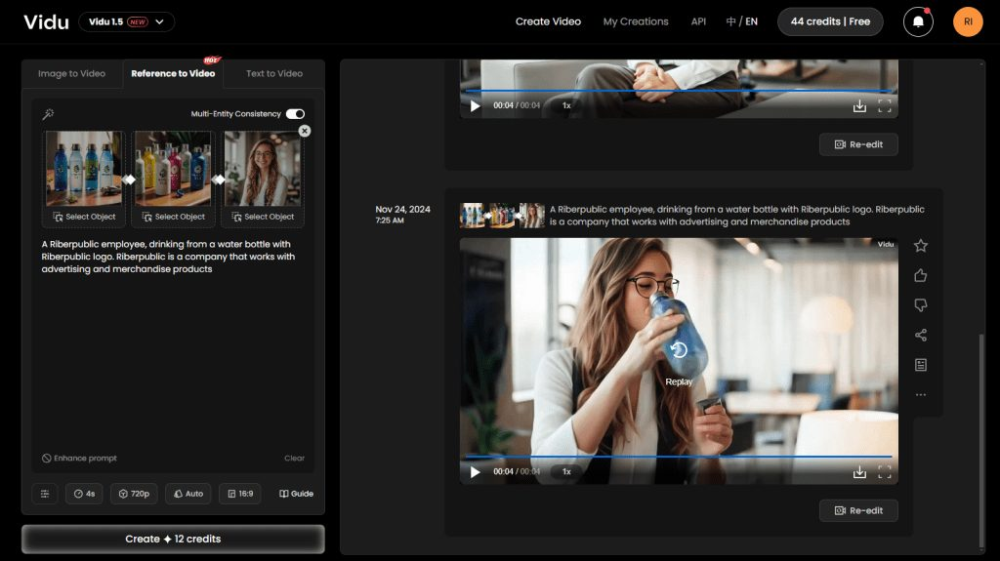

Vidu, una herramienta de creación de vídeo con IA, hace que el proceso sea increíblemente sencillo. Una de sus características destacadas es la consistencia de los resultados, incluso al dar un prompt muy básico y una sola imagen de referencia, como un avatar generado por IA. Aquí tienes una guía rápida para empezar y para usarla en educación.
Primero, regístrate en la herramienta: si aún no tienes cuenta, date de alta en su plataforma. Es gratis hasta 80 créditos al mes, lo que permite generar varios vídeos (cada vídeo de 4 segundos cuesta 12 créditos).
Para crear un vídeo, escribe un prompt describiendo lo que quieres, sube varias fotos de referencia para personalizar el resultado y haz clic en «Crear». Una vez generado el vídeo puedes descargarlo directamente o reeditarlo si lo necesitas; reeditar cuesta solo 4 créditos, frente a los 12 de la creación inicial.

En nuestra empresa simulada del centro vamos a usar esta herramienta para crear contenido personalizado para nuestras redes sociales, por ejemplo para el lanzamiento de nuevos productos. Aportamos una foto de un empleado (creada con MidJourney) y añadimos varias fotos de nuestras botellas y tapones (creadas con Leonardo AI, como expliqué en este post), y luego pedimos a la herramienta que creara un vídeo de 4 segundos, la duración máxima en la versión gratuita. Aquí están los resultados.
Un empleado de Riberpublic, con una de nuestras gorras con el logo de Riberpublic. Riberpublic se dedica a la publicidad y al merchandising promocional.
Un empleado de Riberpublic, bebiendo de una botella con el logo de Riberpublic.
Con 80 créditos mensuales renovables y una velocidad impresionante, Vidu es una opción excelente para quien busque crear contenido visual de impacto sin esfuerzo. Será una herramienta muy valiosa para mi alumnado mientras trabaja en sus planes de empresa, ya que les permitirá mostrar sus productos y servicios. ¿Has probado ya Vidu?